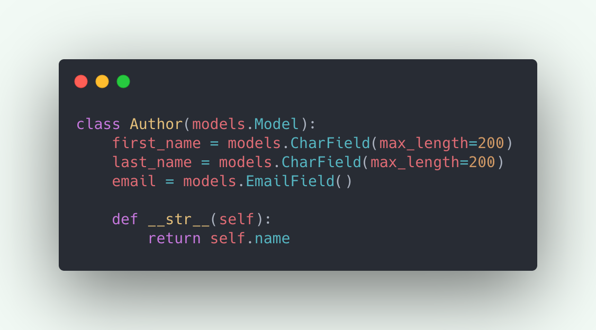
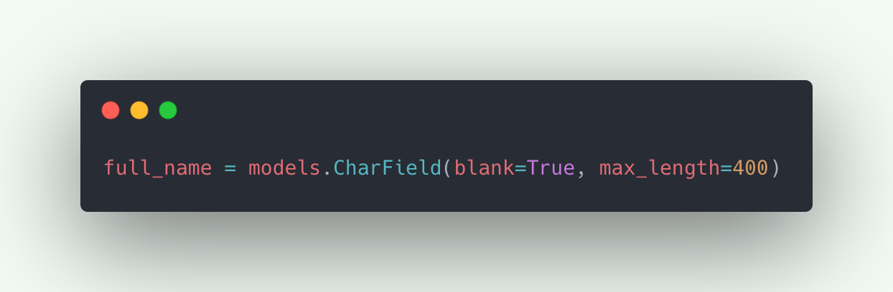
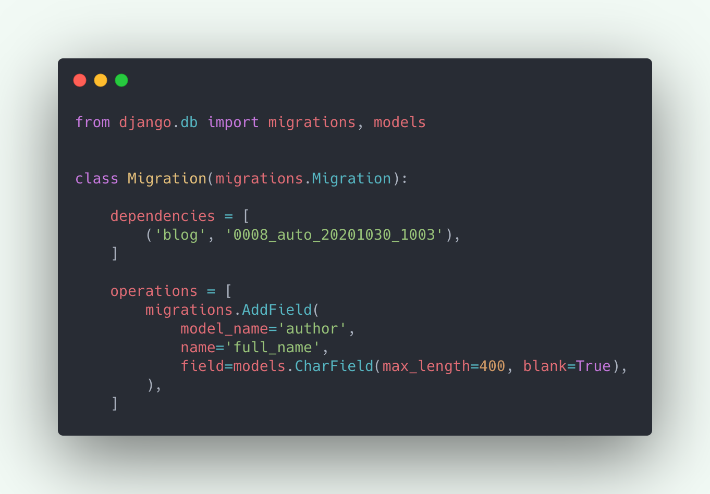
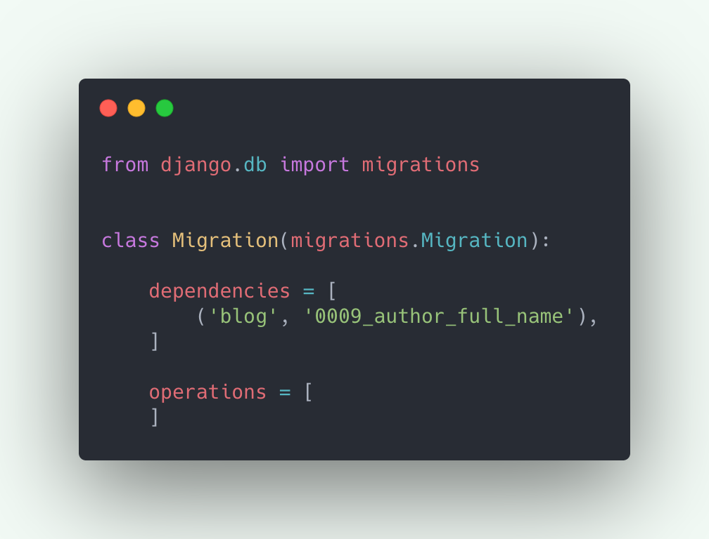
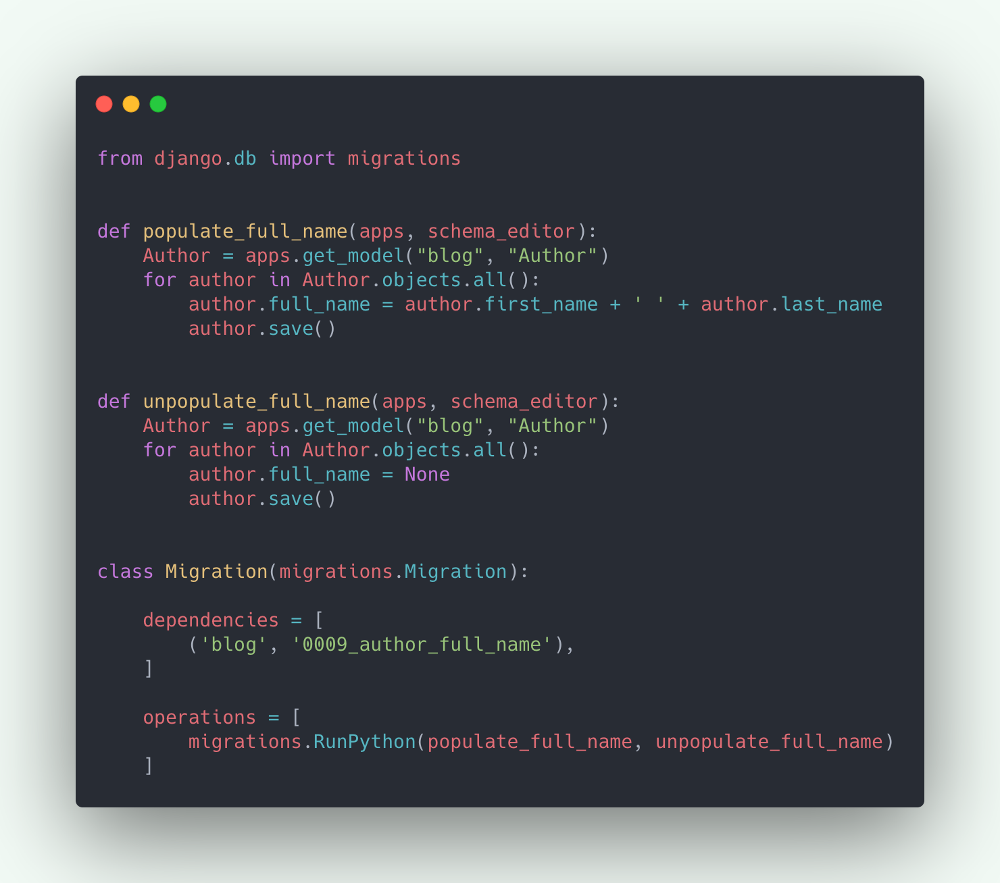
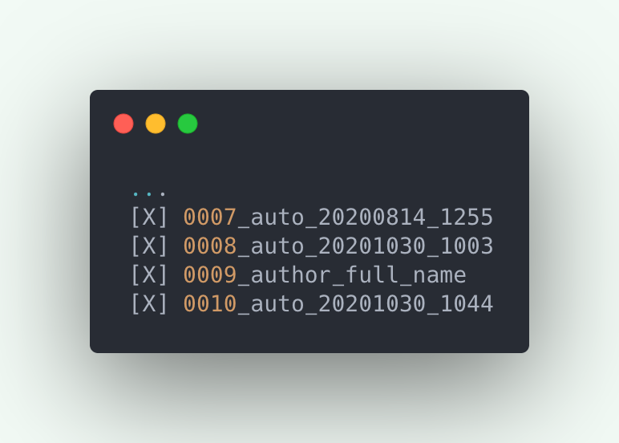
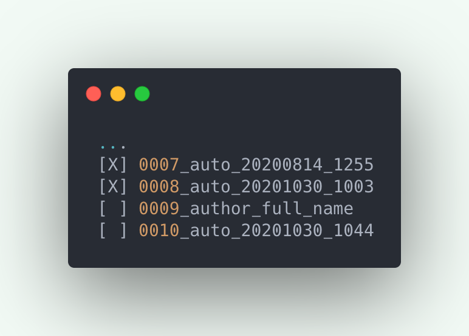

Migrations are one of the most used features of Django. It allows us to build complex applications without even writing a single database query. Migrations are basically responsible for generating database schema for your models. Means that anything that you do in your models is just a few commands away from getting reflected in your database!
Django has a great documentation on migrations workflow and what they actually do under the hood. Most of the work is automatically handled by just two commands:
- python manage.py makemigrations: creates a file for your changes in the model.
- python manage.py migrate: scan that file to create database schema.
Other than that you might come across a few use cases where you need to understand a bit more about the migrations. I will try to explain those in this article.
How to write a data migration
Data migrations allows you to load predefined existing data to your models:
- You’re adding a new field to an existing application. Suppose an uuid field. Now you don’t want all your existing objects to have the same uuid value set by default. So to avoid that we need to write a data migration to add unique values to the existing objects. Even Django’s official documentation has a note on migrations that adds unique fields.
- You want to migrate data from one model to another. Suppose your project depends on a third party app which is deprecated but you’ve found another package which exactly provides the same functionalities you need. But you notice the models both projects are using are different and you wish you could migrate your data from the old app to the new one. Or maybe you want to depreciate an old model in favor of a new one.
- You want to change your Foreignkey relation to ManyToMany.
- You want to add a new field, but the value of which depends on two existing fields.
- You want to control the order in which your migrations are run.
Let’s take a look at the following example to understand more about data migrations:

Now I want to add a new field full_name to the Author. And I want to populate full_name for all the existing Authors.
Note that we can always have a property defined which gives us the full_name by combining the first and last name of the Author. I just happened to find this as an easiest example to understand data migrations.
Now let’s proceed with adding the following field to the model:

..and running python manage.py makemigrations. Which creates the migration file to add the new field to Author.

There are mainly two things that are happening in the above migration file.
- dependencies: This basically defines in which order your migrations should run. As you can see this migration file is dependent on a migration 0008 which basically means that this migration should only be applied after 0008. We can also have dependency from other apps migrations files, e.g. we added a new field which is related with a ForeignKey from another apps model. Now if you see the initial migration file that was created, it won't be dependent on any other file. Read more.
- operations: this contains a list of Operation classes which defines what this migration actually does. As you see we only have one operation defined for this migration. Which is to add a field full_name on model author. Each operation class is responsible for creating an SQL query under the hood, which actually tells your db what to do. Read more about operations and all the classes supported out of the box.
Now we want to write a data migration to populate full_name. And to do that we need to create an empty migration file with “python manage.py makemigrations --empty appname”:

As you see this contains the two keywords that we talked about, but the operations here don't contain anything as we didn’t make any changes to the model rather we want some custom operations to run here. We want operations to populate full_name for all the existing authors:

Kudos to Django for providing RunPython operation class to execute python code. RunPython accepts two callable objects named forward and reverse functions. One is run when applying a migration while the other is run when unapplying(rolling back) a migration. Mostly you can also use migrations.RunPython.noop in place of a reverse function to just do nothing when unapplying.
As you see, forward and reverse functions accept two arguments, apps and schema_editor. apps help to get the correct version of the model on runtime. While the schema_editor is used when we are writing migrations for multiple databases.
Now, simply run python manage.py migrate to apply the new migrations files that we created, which shall populate full_name for all the authors.
Rolling back to old migrations
Suppose you’re working on two features simultaneously and you have two separate git branches for those to avoid any code conflict. But what if you need to change something in your models which changes your db. Now the problem is you’re using the same database for both the features, so whenever you checkout to the other branch you get db conflict errors.
Would have been cool to have a command to quickly switch db according to the branch we're working on. Or a better way to avoid this conflict.
What I do is whenever I have to checkout to the other branch, I roll back to the migrations that we have at master.
Here is how to do that:
First you need to run “python manage.py showmigrations appname” which shows all the migrations files for that app.

The cross signs In the above migrations indicates that those are applied to the db. Suppose the migration you have at master was 0008 and the new migration that got added for this feature to add full_name is 0009. To rollback to 0008 you need to run “python manage.py migrate appname 0008_auto_20201030_1003”. Now when you run showmigrations again you’ll see the following:

Notice the last two migrations are unapplied from the db. And all the data that was there related that migration should be deleted. Now when you checkout to your other branch you won’t be facing any db conflict errors.
It is worth mentioning that merging the two conflicting branches into a new one could also be helpful for testing purposes.
There are other scenarios where you can use this technique of rolling back to the old migrations. E.g. Initially you’re not sure about how many fields you’re going to need for a feature. So while developing you have several migrations for a single feature. But when you’re done, you can rollback, delete the migrations files, and create a new single file for all the changes.
Managing some old data, populating new data to your db, working on multiple feature at same time, are just a few examples of what we could do with migrations. Data migrations or knowing what goes inside the migration files in general could be helpful in a lot of cases.
That would be all for now. Thank you for reading. Hope you got some good idea about migrations and are ready to use it in some of your complex problems!
Tagged under
Django